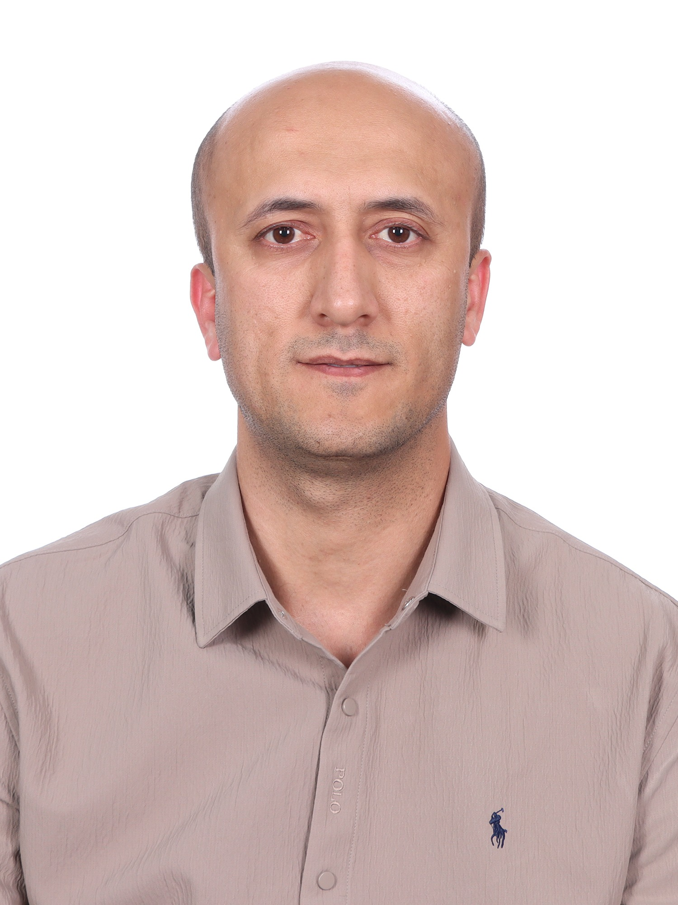
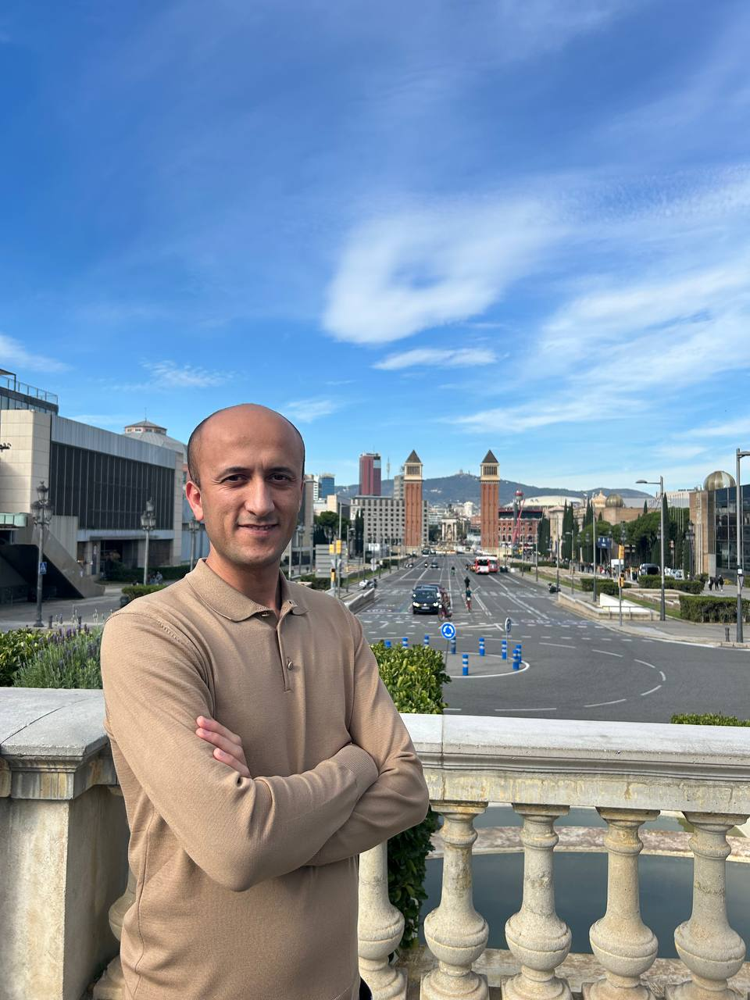
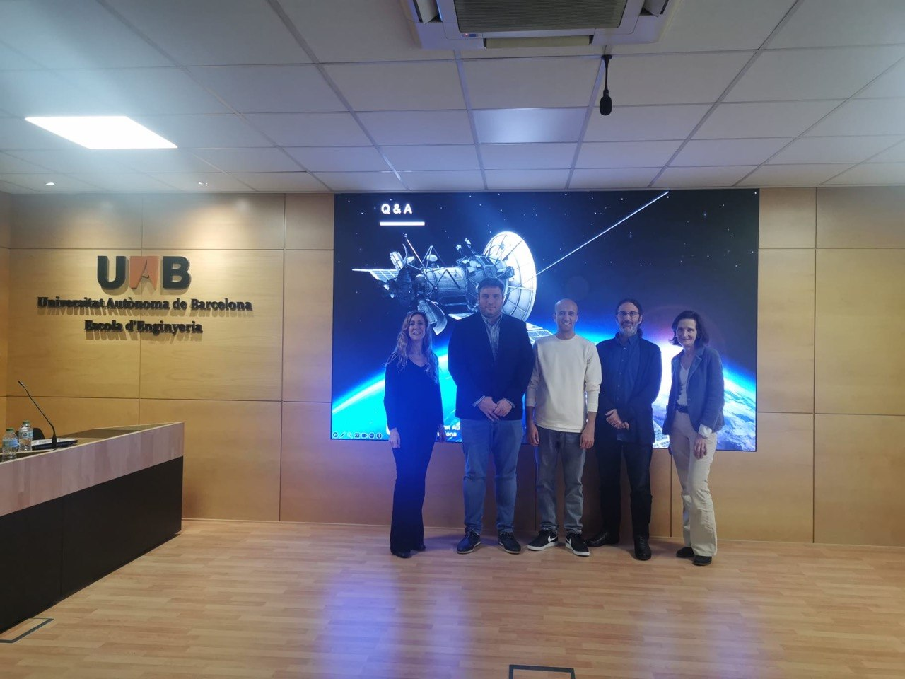
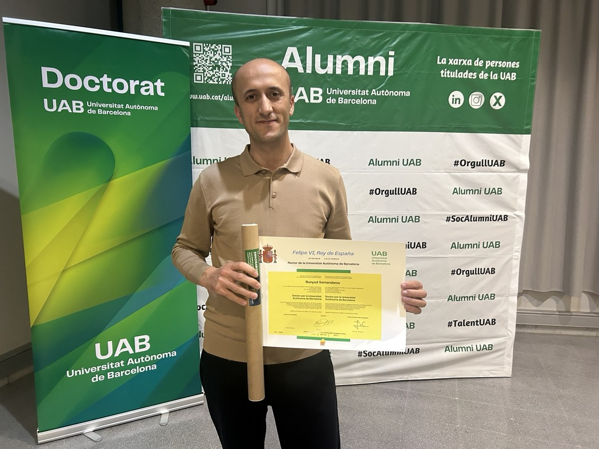

2026 – Present
Professor · Researcher · Educator
Bunyod
Samandarov
Professor, Department of Software Engineering
Al-Khwarizmi University
Doctor of Science (DSc)
I work at the intersection of next-generation communication systems, satellite-IoT, intelligent connectivity, computer programming, information systems and digital technologies.
2026–Professor
DScDoctor of Science
2021–24Doctoral research · UAB

Academic portfolio
Uzbekistan
ResearchSatellite · IoT · New Space
TeachingProgramming · Digital Technologies
01 · About
Academic work with a global perspective.
I am a professor, researcher and educator with experience across telecommunications, satellite systems, digital technologies and higher education.
My research has focused on next-generation satellite systems, Low Earth Orbit constellations, Satellite-IoT integration, multi-objective system design and resilient connectivity. In teaching, I work with computer programming, information systems and digital technologies, helping students connect fundamental concepts with practical problem-solving.
My academic journey includes doctoral research at Universitat Autònoma de Barcelona and university teaching experience in Uzbekistan.
02 · Experience & Education
Academic timeline
2025 – 2026
Associate Professor
Department of Telecommunication Engineering, Urgench State University
2024 – 2025
Associate Professor
Department of Telecommunication Engineering, Urgench Branch of Tashkent University of Information Technologies
2021 – 2024
International doctoral research
Doctoral Researcher
Telecommunications and Systems Engineering, Universitat Autònoma de Barcelona
2020 – 2021
Senior Lecturer
Urgench Branch of Tashkent University of Information Technologies
2017 – 2020
Assistant Teacher
Urgench Branch of Tashkent University of Information Technologies
Ph.D. in Electrical & Telecommunication Engineering
Universitat Autònoma de Barcelona, Spain
M.Sc. in Telecommunication Engineering
Tashkent University of Information Technologies
B.Sc. in Telecommunication Engineering
Tashkent University of Information Technologies
03 · Research
Connectivity for the next generation of digital systems.
My research explores how satellite networks, IoT and intelligent system design can extend reliable digital connectivity and support emerging New Space services.
LEO constellationsSatellite-IoTNew SpaceMulti-objective optimizationRegional link designBroadband connectivityResilient architecturesDigital inclusionSmart infrastructure
04 · Teaching
Learning by building, testing and understanding.
01
Computer Programming
Foundations of programming, computational thinking, problem solving and practical coding with an emphasis on understanding how software is designed and tested.
02
Information Systems & Digital Technologies
Computer hardware and software, operating systems, file management, productivity tools, internet navigation, online safety and basic troubleshooting.
03
Teaching Philosophy
I aim to make technology understandable, practical and transferable—so students can apply what they learn beyond one course, one tool or one platform.
Discuss teaching & collaboration →05 · Publications
Selected research
2024
Conference paper
Design Tradeoffs of a Regional LEO System for Emerging New Space Integrated Services
B. Samandarov & A. Vázquez-Castro · IEEE International Humanitarian Technology Conference, Bari, Italy.
↗
2023
Journal article
Quantum Advantage of Binary Discrete Modulations for Space Channels
B. Samandarov & A. Vázquez-Castro · IEEE Wireless Communications Letters, 12(5), 903–906.
↗
Research profiles
Scholar · Scopus · ORCID · ResearchGate · IEEE
Profile links will be connected in the content manager before final publication.
06 · Research Projects
From satellite systems to integrated services.
 2022–2024
2022–2024
European research project
PhotSat Project
European Union NextGenerationEU (PRTR-C17.I1) and Generalitat de Catalunya funded project connected with satellite communication and integrated New Space services.
 2024
2024
LEO system research
Regional LEO System Design
Research on design tradeoffs for a regional Low Earth Orbit system supporting emerging New Space integrated services and connectivity.
Project imagery: NASA/JPL-Caltech and NASA Goddard Space Flight Center. Used as contextual scientific imagery; it does not depict the PhotSat hardware itself.
07 · PhD Journey
Barcelona, research, milestones—and a doctoral chapter completed.
From receiving international scholarship support in 2021 to completing doctoral studies at Universitat Autònoma de Barcelona in 2024, this period shaped my research direction, international experience and academic perspective.



The journey begins
Received scholarship support from the “El-yurt umidi” Foundation and began doctoral studies abroad.
Doctoral research
Research in Electrical and Telecommunication Engineering at Universitat Autònoma de Barcelona.
Projects & publications
Research activity connected with New Space, satellite communications, PhotSat and peer-reviewed publication.
Doctoral completion
Completed the Ph.D. program at Universitat Autònoma de Barcelona.
2021
Award & Scholarship
“El-yurt umidi” Foundation Scholarship
Awarded scholarship support from the “El-yurt umidi” Foundation to pursue doctoral studies abroad.
Visit the foundation ↗08 · Contact
Research, teaching or academic collaboration?
For research collaboration, academic projects, teaching opportunities or professional correspondence, feel free to get in touch.